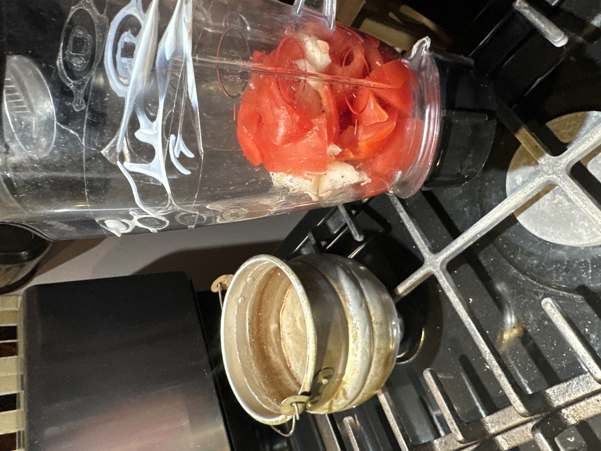

Sopa de Melon
Ingredients
- Tomato
- Onion
- 1 7oz pasta bag
- 1 garlic clove

Directions
- Bring water to a boil on a different pot
- Add oil to pot with garlic
- Add pasta and roast until golden
- Lower heat to minimun
- Blend tomato and onion then add mixture to pot with pasta
- Add boiling water
- Let the mixture boil and turn then imediately turn off stove
- Put a lid on the pot and let pasta rest for a couple minutes